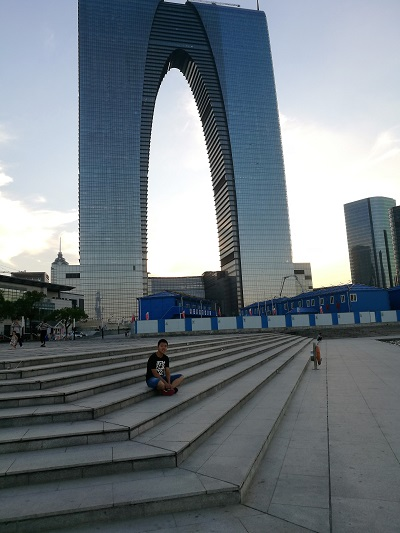
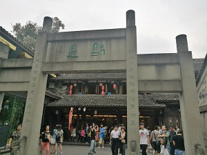
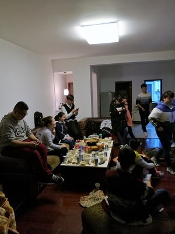

个人简介
王健，男，1998年7月出生于黑龙江的一个小县城，2016年考入成都理工大学，目前正在该校的信息科学与技术学院学习计算机专业
兴趣爱好广泛，热爱排球，羽毛球，网球，乒乓球等各种球类运动
学校简介
成都理工大学（Chengdu University of Technology）坐落于有“锦官城”之称的国家历史文化名城成都，由四川省人民政府和国土资源部、成都市人民政府共建，入选国家“中西部高校基础能力建设工程”、“卓越工程师教育培养计划”、“国家建设高水平大学公派研究生项目”、“四川2011计划”，为中国地球科学高层次人才培养与科学研究基地之一，是以地质、能源、资源科学、核技术、环境科学为优势，以化工、材料、电子、机械、信息科学等学科专业为特色的省属重点大学。
学院简介
成都理工大学信息科学与技术学院由原成都理工大学信息工程学院、网络教育学院于2010年组建而成，前身可以追溯到原成都地质学院计算中心、计算机工程系、电子电工教研室、信息工程与地球物理系、信息工程学院等。目前学院建设有电子信息类和计算机类两大优势学科群，具有学士、硕士授予权，是四川省信息工程、计算机科学与技术本科人才培养基地，是成都理工大学国家和省部级重点学科、重点实验室的主要支撑单位，是四川省教育厅“卓越工程师教育培养计划”建设单位之一。
生活
- 
2016年8月
苏州游玩 - 
2016年9月
体验成都 - 
2016年12月
社团活动 
2017年5月
庐山之行